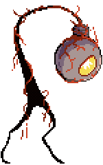
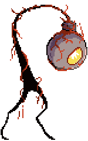

UNDERTAKER
This school group project involved 4 people making a Turn-Based Combat 3D game.
Game Trailer
Yumin Ni, Benjamin Yang,
Jeffrey Wu, Kitty Liu
Unity, Blender, Procreate，AE
Game Designer, Visual Artists
Sep. - Dec.2024
MY ROLE
In this project, my main role was to create visual assets, including character designs, scenes, UI elements, and 3D models. I also collaborated with my group members to develop a compelling storyline and gameplay mechanics.
CONCEPT
"Undertaker" is a third-person, turn-based strategy (TBS) game, introducing a unique hybrid combat system, blending real-time action with traditional turn-based mechanics to enhance game pacing. This approach provides a more dynamic and engaging experience compared to conventional turn-based games. Players engage in real-time dodging to accumulate energy and plan strategic attacks, creating a fast-paced and exciting gameplay experience.
The core objective of the game is to purify the soul by overcoming the emotional burdens accumulated throughout a lifetime. Players explore a fantasy world, uncover hidden memories, and face enemies through hybrid combat while solving puzzles to reveal the protagonist’s backstory.
game walkthrough
PROCESS
Challenge
We initially designed a narrative-driven puzzle exploration game with three branching endings based on player choices. As we developed multiple storyline paths, we realized that relying solely on dialogue led to an overwhelming amount of text. To ease the cognitive load, I implemented narrative clues through visual elements embedded in the scenes.
Additionally, I learned the importance of establishing consistent relative sizing between character sprites and scene objects before making a demo. Because this was not defined from the start, we later spent significant time adjusting and replacing assets to maintain visual coherence.
narrative plot
Illustrate
I craeted the inital character draft in Proceate. I craeted the visual assets of sprites and animtions by Aseprite. For character design, I created the "Light Bulb Monster, " an enemy concept closely tied to the game’s narrative. Drawing from the protagonist's last scene before a car accident—an overexposed truck headlight—I combined light bulb and eye motifs to symbolize the trauma embedded in the subconscious. The enemy was designed with a humanoid head, incorporating bloodshot thread-like elements around the bulb to evoke the image of bloodshot eyes, aligning with the game’s psychological horror theme.
overall asset


 

charcter assets
FINAL THOUGHTS
I enjoyed working on this project despite it being stressful and challenging. I learned a lot in this project about game design and game work flow. I have a really good team in this project that we make a good teamwork while we learned time management and problem solving. We know the design should start from small idea based on our ability before develop it into a big idea.